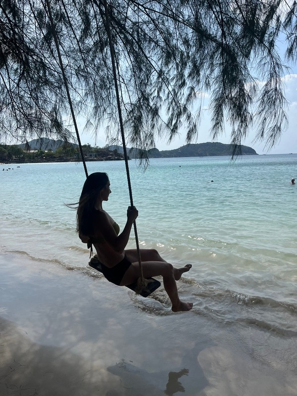
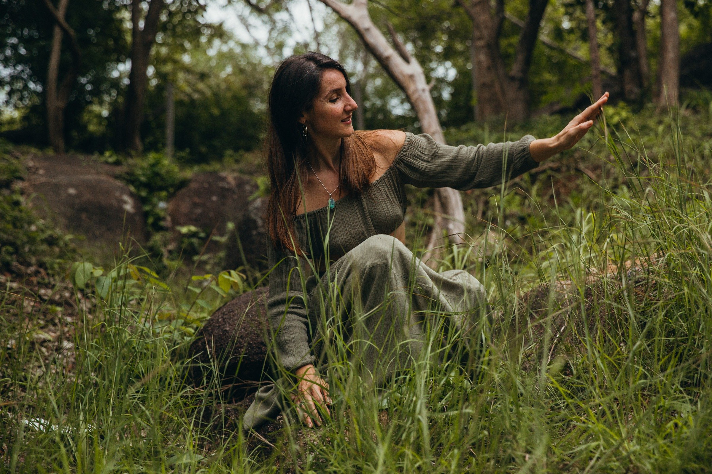

My journey into somatic healing

I'm a Somatic Practitioner and I specialize in nervous system regulation and trauma work. I am currently a student of Somatic Experiencing International and before starting to learn this professionally, I first got in touch with somatic work as someone needing therapy and support, just like you. Stress and overwhelm were no strangers to my life.
Before somatic healing, my life was all about performance. Big4 corporate career. Corner office. 12 hour workdays. Million dollar clients. A salary that looked impressive, and a nervous system constantly in fight-or-flight. I was achieving everything society calls success, yet losing connection with myself a little more each day.
I spent many years of my life stuck in my dysregulation, feeling broken and unable to move in the direction I wanted to. Chronic illness, physical pain and years of trying to find out what is wrong with me just to discover that it was only my body in survival response, trying to keep me alive.
I come to this work from my own history of anxiety, chronic illness, unworthiness and hopelessness. I am passionate to share what worked for me with as many people as I can. I see somatic healing as my life purpose.
I know and I experience directly how powerful it is to work at the level of our nervous system. If I could do this work and get unstuck, then I know you can too.

"I loved how Valentina combines that gentle, safety-based guidance with a clear sense that she knew exactly what she was doing. She offered tools and gentle check-ins to help me navigate challenging sensations and emotions, always bringing me back to a place of safety in my body. The pace was slow when it needed to be and I always felt that lovely combination of gentleness and real expertise.
By the end of each session, I felt a renewed sense of energy, like I was reclaiming my own power. It was truly powerful."